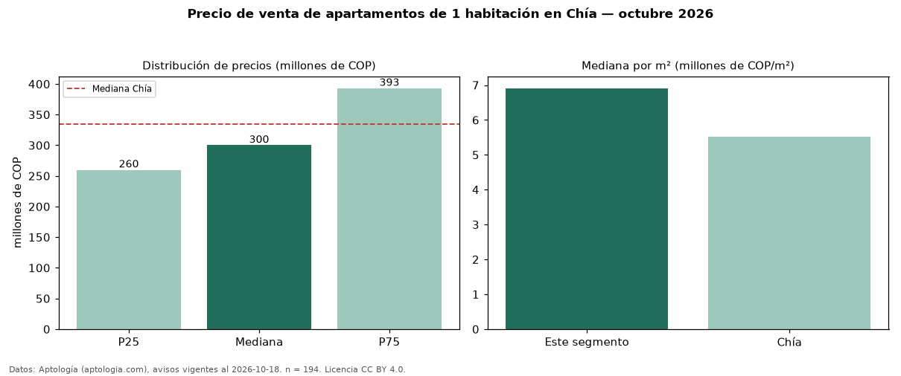

Precio de venta de apartamentos de 1 habitación en Chía — octubre 2026
Con 194 avisos vigentes, el precio mediano de apartamentos de 1 habitación en venta en Chía es COP 300 millones. Eso es 10 % por debajo de la mediana de todos los apartamentos en venta de Chía (COP 335 millones). Por metro cuadrado, la mediana es COP 6,91 millones/m² (n = 194 avisos con área). Con el precio por m² de arriendo del mismo segmento (COP 43.125/m² al mes), la rentabilidad bruta implícita es 7,5 % anual (aproximación con medianas de ofertas distintas). El área mediana anunciada es 45 m². La administración mediana declarada es COP 321.000 al mes (n = 161). El estrato más frecuente es 4 (53 % de los avisos con estrato). 90 % de los avisos con el dato declara parqueadero o cochera. Datos: Aptología (aptologia.com), CC BY 4.0 — https://www.aptologia.com/venta/chia. Archivos: PDF, CSV con las cifras y gráfica PNG.

| Avisos únicos | 194 |
|---|---|
| Percentil 25 | COP 259.900.000 |
| Mediana | COP 300.000.000 |
| Percentil 75 | COP 393.000.000 |
| Mediana por m² | COP 6.909.324 |
Fuente: avisos vigentes de portales inmobiliarios recopilados por Aptología, deduplicados (mínimo 30 avisos únicos por celda). Precios pedidos, no cerrados. Fecha: 2026-10-18.